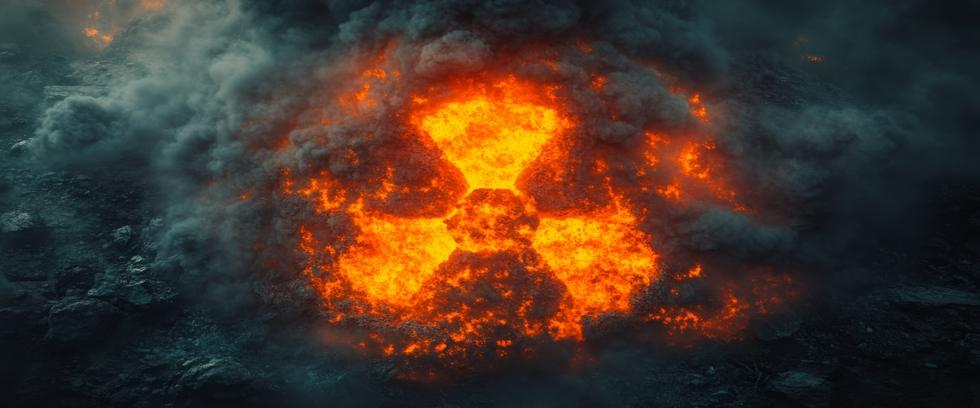

When nuclear weapons are discussed, conversations are often dominated by geopolitical strategy, deterrence theory, or abstract numbers—megaton yields, missile ranges, warhead counts. But behind those stark calculations lie untold stories. Real people. Real places. Real suffering. “Voices from the Fallout” is not about doctrine or strategy. It is about what happens when nuclear tragedy strikes—and how those who lived through it can teach us what’s truly at stake.
Hiroshima and Nagasaki: Silenced Cries
On August 6, and 9, 1945, two Japanese cities were obliterated in seconds by atomic bombs. More than 200,000 people died—many instantly from blast effects, others slowly from radiation sickness and burns. The survivors—people known as hibakusha—carried physical and emotional scars for life.
One hibakusha named Setsuko Thurlow was thirteen when the bomb hit Hiroshima. Buried in rubble, she was pulled out by a soldier, only to watch classmates burn to death. Today, she speaks passionately about the horrors of nuclear war—not as a political commentator, but as a witness. “Whenever I speak,” she once said, “I am speaking for those who cannot.”
Her story is not an anomaly. Thousands of hibakusha have suffered cancer, disfigurement, reproductive issues, and more. Some still fight for recognition of the damage they endured, their voices unheard, or seen as old news. But their stories are stark reminders of what’s at stake.
Downwinders: The Invisible Victims
Nuclear fallout didn’t end with Japan. Between 1945 and 1992, over 2,000 nuclear tests were conducted worldwide—most above ground. In America, vast portions of Nevada, Utah, and New Mexico were exposed to radioactive fallout. The people who lived there—ranchers, Native Americans, and rural families—were not warned about the danger they faced.
Known as "downwinders," many suffered long-term effects from radiation exposure, including cancer, birth defects, and autoimmune diseases. Government agencies initially suppressed studies about radiation sickness, then denied responsibility for decades, even as families buried loved ones time and again.
The city of St. George, Utah, downwind of the Nevada Test Site, saw a spike in leukemia and thyroid cancers after nuclear tests in the 1950s. Ranchers reported sheep with bleeding gums and malformed lambs. People also became sick and died, but the government dismissed the evidence as “inconclusive.”
Today, downwinders' advocates like Tina Cordova—co-founder of the Tularosa Basin Downwinders Consortium—fight for accountability and healthcare support. Their message is simple: “We were damaged without warning, then our voices were silenced.”
Chernobyl and Fukushima: Fallout Without War
Not all nuclear fallout came from bombs. The accidents at the Chernobyl and Fukushima nuclear power plants were civilian disasters, yet their aftermath still resembled war zones. In both cases, mass evacuations, widespread radiation, and long-term displacement turned thriving cities into ghost towns.
Chernobyl’s “Exclusion Zone” still spans 1,000 square miles where residents were forcibly relocated overnight, never to return. The psychological toll, particularly on children, is immeasurable. Many grew up labeled as “radiation people.” Most faced social stigma and psychological damage, even if they escaped physical harm.
Fukushima’s fallout renewed debates about nuclear safety and accountability. Despite modern technological advances, a single earthquake caused the cooling system to fail, leading to a meltdown that released deadly radioactive isotopes into the ocean and atmosphere. Once again, regular people paid the price for government negligence.
The stories of those diseased, displaced, or dismissed reveal that nuclear power, like nuclear weapons, involves risks that may last far beyond the initial incident.
Indigenous Voices From Ground Zero
Across the planet, Indigenous communities have borne a disproportionate burden of nuclear fallout. In Australia, Aboriginal land was used for British nuclear tests in the 1950s. In the Pacific, America tested hydrogen bombs at the Marshall Islands, rendering Bikini and Enewetak Atolls uninhabitable.
Marshallese elders remember skies turning red, fish dying, and children playing in the pretty radioactive ash, unaware of the dangerous radiation penetrating their flesh. Odd things were later born that did not appear human. Some had multiple heads or deformed skulls. Others had grotesque limbs, or missing parts, or too many. Numerous cancers, especially thyroid tumors, developed in many survivors, including two-thirds of children exposed in places like Rongelap Island.
Decades later, cancer rates in the Marshall Islands remain high, with some islands still unsafe to inhabit. Many survivors were not relocated in time to avoid radiation damage. But the legal agreement to assist affected Marshallese is in question, with America insisting the $150 million in compensation awarded is the full and final settlement.
In the United States, the Navajo Nation was heavily affected by uranium mining during the Cold War. Miners were rarely informed of radiation risks, and safety protocols were nonexistent. A spike in lung and kidney cancers soon followed, and contaminated water still affects some communities to this day.
Those people lacked the political power to say no to uranium mining, and still lack the resources needed to properly treat the radiation damage they suffered. But their voices demand to be heard and acknowledged—not just as victims, but as leaders in the call for awareness about radiation hazards.
The Burden Carried Forward
Today, the nine nuclear-armed nations possess over 12,000 thermonuclear warheads. Those weapons are far more powerful than the atomic bombs used on Japan. The consequences of a single detonation—whether accidental or intentional—would be catastrophic. The effects of a nuclear war are unthinkable.
But we don’t need hypotheticals. The consequences of radiation are already known. They exist in the lungs and organs of downwinders, in the contaminated soil of Indigenous lands, and in the memories of Japanese hibakusha – not to mention nuclear refugees who never went home.
Their stories are not only warnings of a possible future. They are real-life stories from our recent past.
Yet their voices are usually excluded from discussions about nuclear policy, as politicians posture for the media and security experts debate nuclear strategy. We owe them more than that. We owe them a commitment to hear their voices and to never let their experiences be repeated again.
Why These Stories Matter
The stories of nuclear survivors are a plea—not just for empathy, but for action. They remind us that nuclear weapons are not only diplomatic or strategic issues, they are human issues as well.
At Our Planet Project Foundation, we are committed to sharing these stories—not to shock or to frighten, but to prioritize the human consequences of policy decisions made behind closed doors. By listening to the voices of Fallout victims, we confront the reality of what nuclear weapons really are—and the terrible damage they can do.